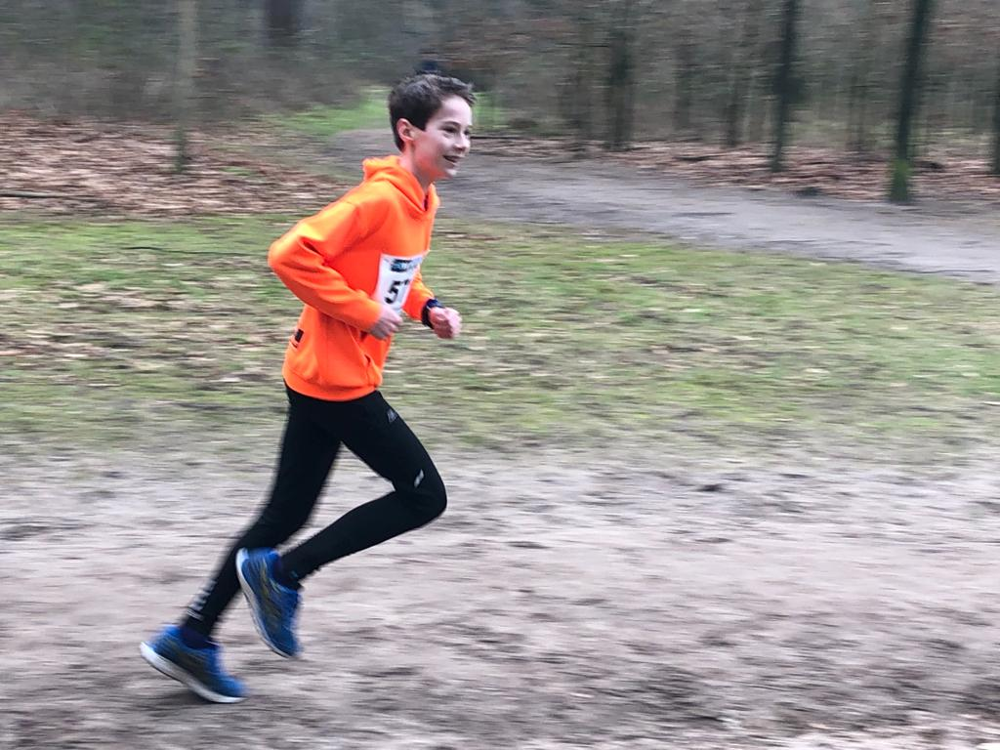

Hallo, ik ben Joost Bosgoed
Webontwikkelaar | Designer | Creator
Bekijk mijn werkOver mij

ik houw van programer en atletiek ik hoop in de toekomst beter te worden in bijde
- HTML
- CSS
- JavaScript
Webontwikkelaar | Designer | Creator
Bekijk mijn werk
ik houw van programer en atletiek ik hoop in de toekomst beter te worden in bijde